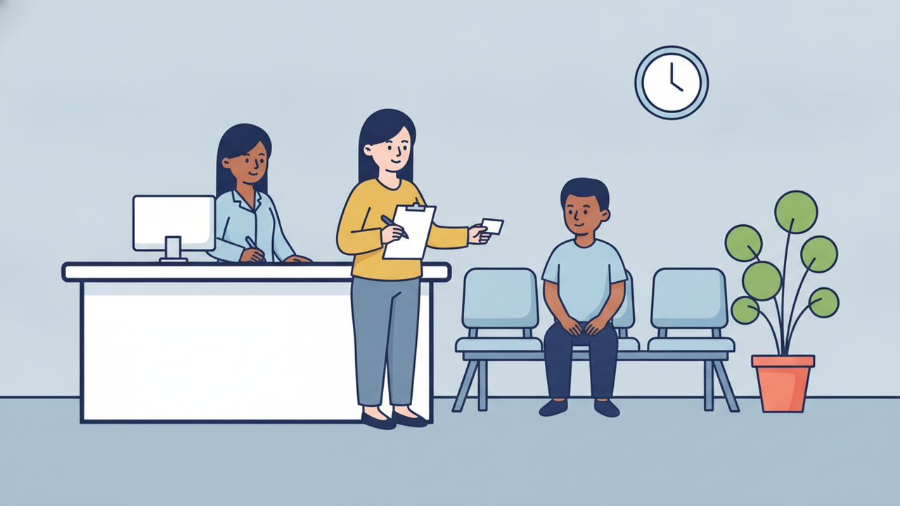

ロールプレイング ④
病院の受付

場面設定
プノンペンのクリニック。日本人のお客様（女性）が、予約なしで来院し、受付で問診票を書いて診察の順番を待つまでの場面。カンボジアのクリニックは予約なしでも受け付けてくれることが多く、受付で番号札を渡される。
登場人物: 受付スタッフ（店員にあたる役）／お客様（បង、女性を想定）
この教材と同じテーマの聞き流し動画「聞き流しクメール語271単語【病院で使う】」は 11月27日 に公開予定です。公開されたら、ここに動画が出ます。
保存されるファイル名: 04_病院の受付_v1.0_20261105.pdf
会話
受付スタッフ
ជម្រាបសួរ!
សូមស្វាគមន៍មកកាន់គ្លីនិករបស់យើងខ្ញុំ។
តើបងមានណាត់ទុកមុនទេ?
お客様
ជម្រាបសួរ!
ខ្ញុំអត់បានណាត់ទុកមុនទេ។
ខ្ញុំអត់ស្រួលខ្លួន ចង់ជួបគ្រូពេទ្យ។
受付スタッフ
ចាស អត់អីទេ។
តើបងមកលើកដំបូងមែនទេ?
お客様
ចាស ខ្ញុំមកលើកដំបូង។
ខ្ញុំអាចនិយាយភាសាខ្មែរបានតិចៗ។
សូមជួយខ្ញុំផង។
受付スタッフ
ចាស អញ្ចឹងសូមបំពេញក្រដាសនេះ។
សូមសរសេរឈ្មោះ អាយុ និងលេខទូរស័ព្ទ។
お客様
ចាស។
តើខ្ញុំត្រូវសរសេរអាសយដ្ឋានដែរឬទេ?
受付スタッフ
ចាស ត្រូវ។
តើបងមានធានារ៉ាប់រងទេ?
お客様
ចាស មាន។
នេះជាកាតធានារ៉ាប់រង។
受付スタッフ
អរគុណ។
សូមអញ្ជើញអង្គុយរង់ចាំនៅបន្ទប់រង់ចាំ។
ខ្ញុំនឹងហៅឈ្មោះបង។
お客様
តើត្រូវរង់ចាំយូរទេ?
受付スタッフ
ប្រហែល៣០នាទី។
លេខរៀងរបស់បងគឺលេខប្រាំ។
お客様
ចាស អរគុណច្រើន។
フリートークにつながる質問
会話のあと、役を離れてこの質問で話を広げてみてください。答えは思いつく範囲で構いません。
質問 1
តើបងធ្លាប់ទៅមន្ទីរពេទ្យនៅកម្ពុជាទេ?
質問 2
ភាពខុសគ្នារវាងមន្ទីរពេទ្យជប៉ុន និងកម្ពុជាគឺអ្វី?
質問 3
តើបងគិតថាការពិនិត្យសុខភាពសំខាន់ទេ?
扱った単語（57語）
| # | クメール語 | 読み方 | 意味 |
|---|---|---|---|
| 1 | ជម្រាបសួរ | チュムリアップ・スオ | こんにちは（丁寧な挨拶） |
| 2 | ស្វាគមន៍ | スヴァコム | 歓迎 |
| 3 | មកកាន់ | モーク・カーン | 〜へ来る |
| 4 | គ្លីនិក | クリーニック | クリニック |
| 5 | ណាត់ | ナット | 予約する |
| 6 | ទុកមុន | トック・ムン | 前もって取っておく |
| 7 | ស្រួល | スルオル | 容易な |
| 8 | ខ្លួន | クルオン | 自分 |
| 9 | ចង់ | チョン | したい |
| 10 | ជួប | チュオップ | 会う |
| 11 | គ្រូពេទ្យ | クルー・ペート | 医者 |
| 12 | អត់អីទេ | オット・エイ・テー | 大丈夫です |
| 13 | មក | モーク | 来る |
| 14 | លើកដំបូង | ルーク・ドムボーン | 初めて |
| 15 | មែនទេ | メン・テー | 〜ですよね？ |
| 16 | អាច | アーチ | できる |
| 17 | និយាយ | ニジェイ | 言う |
| 18 | ភាសា | ピアサー | 言語 |
| 19 | ខ្មែរ | クマエ | カンボジア |
| 20 | តិចៗ | ティッ・ティッ | 少しだけ |
| 21 | ជួយ | チュオイ | 手伝う |
| 22 | អញ្ចឹង | アンチャン | それでは・じゃあ |
| 23 | បំពេញ | ボムペニュ | 記入する |
| 24 | ក្រដាស | クロダッ | 紙 |
| 25 | សរសេរ | ソーセー | 書く |
| 26 | ឈ្មោះ | チュモホ | 名前 |
| 27 | អាយុ | アーユ | 年齢 |
| 28 | លេខទូរស័ព្ទ | レーク・トゥールサップ | 電話番号 |
| 29 | អាសយដ្ឋាន | アーサイヤターン | 住所 |
| 30 | ដែរឬទេ | ダエ・ルー・テー | 〜もですか？ |
| 31 | ធានារ៉ាប់រង | ティアニア・ラップローン | 保険 |
| 32 | កាត | カート | カード |
| 33 | អរគុណ | オークン | ありがとう |
| 34 | អញ្ជើញ | オンチューニュ | どうぞ〜なさる（丁寧な勧誘） |
| 35 | អង្គុយ | オンクイ | 座る |
| 36 | រង់ចាំ | ロンチャム | 待つ |
| 37 | បន្ទប់ | ボントップ | 部屋 |
| 38 | នឹង | ヌン | これから〜する（未来） |
| 39 | ហៅ | ハウ | 呼ぶ |
| 40 | យូរ | ユー | (時間的に)長い |
| 41 | ប្រហែល | プロハエル | たぶん |
| 42 | នាទី | ニアティー | 分 |
| 43 | លេខរៀង | レーク・リエン | 順番（受付番号） |
| 44 | លេខ | レーク | 番号 |
| 45 | ធ្លាប់ | トロアップ | 〜したことがある |
| 46 | ទៅ | タウ | 行く |
| 47 | មន្ទីរពេទ្យ | モンティー・ペート | 病院 |
| 48 | កម្ពុជា | カンプチア | カンボジア |
| 49 | ភាពខុសគ្នា | ピアップ・コホ・クニア | 違い |
| 50 | រវាង | ロヴィアン | 〜の間 |
| 51 | ជប៉ុន | チャポン | 日本 |
| 52 | គិត | クット | 考える |
| 53 | ថា | ター | 言う |
| 54 | ការ | カー | 〜すること（名詞を作る） |
| 55 | ពិនិត្យ | ピーヌット | 診察する |
| 56 | សុខភាព | ソッカピアップ | 健康 |
| 57 | សំខាន់ | ソムカン | 大事な |
表現・文法の解説
1ចាស／បាទ（はい）の性別による使い分け
「はい」にあたる語は、話す本人の性別で変わる（相手の性別ではない点に注意）。女性は ចាស（読み: チャー）、男性は បាទ（読み: バート）。この教材はお客様を女性として書いてあるので、男性がロールプレイングする場合は、お客様の「チャー」を「バート」に置き換えて読む。
2និង と នឹង — 発音がほぼ同じで、書き間違えやすい2語
5番の និង は「〜と」の接続詞（「名前、年齢、そして電話番号」）。9番の នឹង は「これから〜する」を表す語（「お名前をお呼びします」）。この2つは発音がほぼ同じで、書くときに取り違えやすい。意味はまったく違うので、クメール語の文を読むときは毎回ここを見る。
3សូមអញ្ជើញ + 動詞（どうぞ〜なさってください）
សូម よりさらに丁寧な、接客・案内特有の表現。9番の សូមអញ្ជើញអង្គុយ（どうぞお座りください）のように、お客様に何かをしてもらう場面で使う。病院の受付や看護師も同じ言い方をする。
4〜ដែរឬទេ?（〜もですか？）
6番の តើខ្ញុំត្រូវសរសេរអាសយដ្ឋានដែរឬទេ?（住所も書かないといけませんか？）。ដែរ が「〜も」、ឬទេ が「〜ですか」にあたる。すでに出た話に付け足して聞くときの形。
5មែនទេ?（〜ですよね？）
3番の តើបងមកលើកដំបូងមែនទេ?。自分の予想を相手に確かめる言い方。តើ〜ទេ?（〜ですか）より、相手の答えをある程度わかっている場合に使う。
6ណាត់ទុកមុន（予約を取っておく）
តើបងមានណាត់ទុកមុនទេ?（ご予約はお取りですか）。ណាត់（ナット）だけでも「約束・予約」だが、病院の受付では ទុកមុន（トック・ムン＝前もって取っておく）を付けるのがふつう。カンボジアのクリニックは予約なしでも受け付けてくれることが多いので、ខ្ញុំអត់បានណាត់ទុកមុនទេ（予約はしていません）も一緒に覚えておくと使える。អត់បាន（オット・バーン）は「〜しなかった」で、過去にその行為をしていないことを表す。